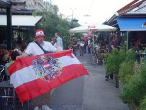
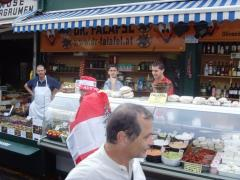
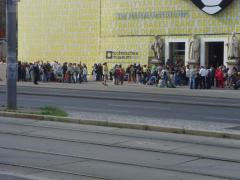
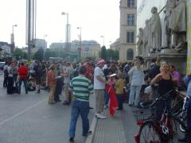
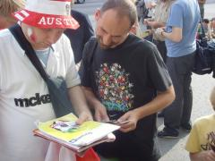
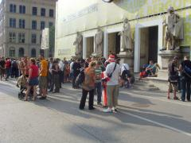
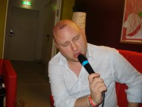
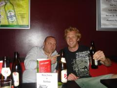

G Budd Becomes Mayor of Vienna
Wow - what a day Friday was.
It started sitting round nursing our massive hangovers from the night before in our new Hostel and ended with Graham being worshipped around the City.
During the day Jimbo, Steve and Gra did their own walking tour whilst Shaun and John went to the football museum. During our walking tour in the park we stummbled across a kid and his Mum sorting through their stickers and album for Euro 2008. Graham got very excited he had finally found someone else collecting these stickers and got his album (which is carried everywhere with him) and swappsey`s out and they began trading. Before we left them the Mum said there was an organised sticker swap that evening outside the Museum - we noted the place and continued on our tour.
We got to the museum that night & there were about 1,000 people swapping stickers - it was unbelieveable. G Budd got his stickers organised and got in the middle and started frantically trading. At one point we met this guy who needed 7 stickers to complete his album - bang we had 1 for him, Number 411. He said it was very hard to get this and shouted out in eurphoria "This is the Man with 411" at that point everyone stopped swapping, looked at G Budd and attacked him to see if they could trade with him!!
The result of the swapping is that when the sticker album came to Vienna we needed 270 - now we only need 64!!!
Other highlights of the day was walking through a market with posh resturants which were packed with people who all stopped eating as Graham walked through dressed as an Austrian supporter. It was like a movie - with everyone clapping him, and cheering him - at one point a stallholder stopped him and gave him free food!! - unsurprisingly he will be dressed like this for remainder of his trip.
In the night we had an easy one in our new luxury hostel with Jimbo making a beautiful dinner for everyone.had a few beers with an aussie guy we met and went to bed in preperation for a big party on saturday and sunday as football comes to town!!
EAST
Photographs


{kind=link}
{kind=link}

{kind=link}

{kind=link}

{kind=link}

{kind=link}

{kind=link}

{kind=link}

{kind=link}
